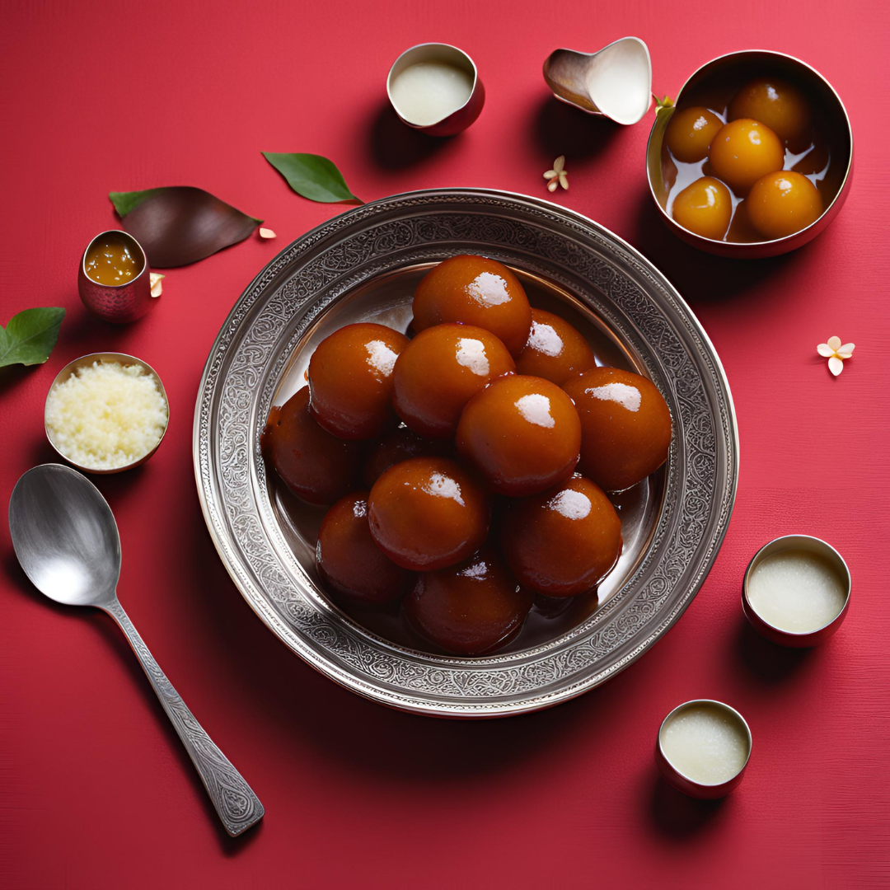
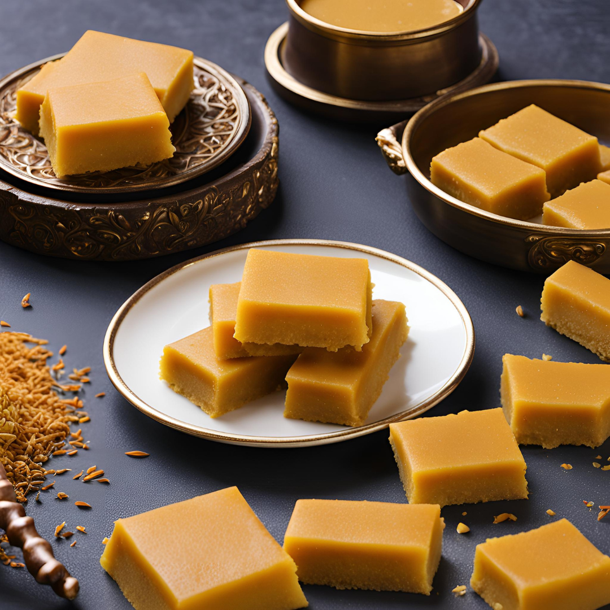
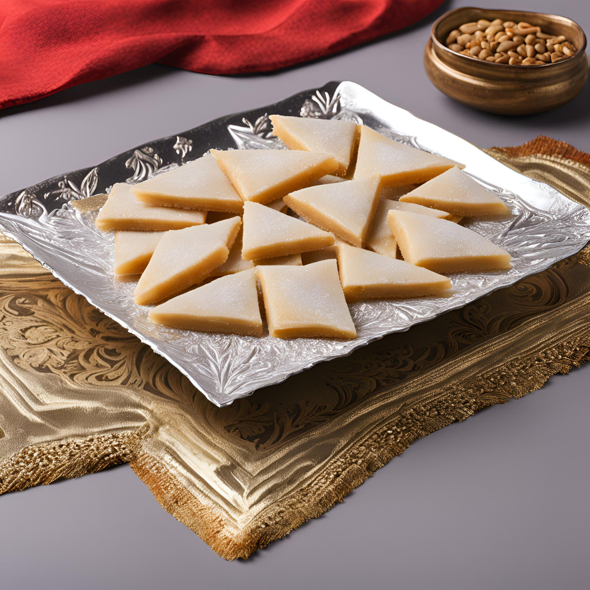
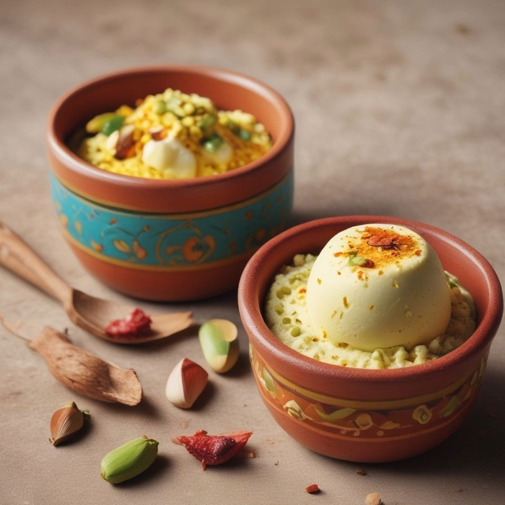

Gulaab Jamun
Servings: 10
Ingredients:
- 1 cup khoya (milk solids)
- ¼ cup all-purpose flour
- 1/8 tsp baking soda
- 2 tbsp milk
- 1½ cups sugar
- 2 cups water
- 4-5 cardamom pods
- 1 tsp rose water
- Oil for frying
Instructions:
- Mix khoya, flour, and baking soda; knead.
- Add milk; form a smooth dough.
- Shape into small balls.
- Heat oil; fry balls until golden brown.
- Boil sugar, water, and cardamom for syrup.
- Simmer syrup until slightly thickened.
- Add rose water to syrup.
- Soak fried balls in syrup for 1-2 hours.
Serve: Warm or chilled.

Ghee Mysore Pak
Servings: 6
Ingredients:
- 1 cup besan (gram flour)
- 1 cup ghee
- 1 cup sugar
- 1/2 cup water
Instructions:
- Grease a plate with ghee; set aside.
- Mix besan and 2 tbsp ghee in a bowl.
- Heat sugar and water until it reaches one-string consistency.
- Slowly add the besan mixture to the sugar syrup, stirring constantly.
- Gradually add the remaining ghee, stirring continuously.
- Cook until the mixture starts to leave the sides of the pan.
- Pour the mixture onto the greased plate.
- Allow it to cool slightly, then cut into pieces.
Serve: Once cooled, serve as a sweet snack.
Tiramisu
Servings: 8
Ingredients:
- 6 large egg yolks
- 3/4 cup granulated sugar
- 1 cup mascarpone cheese
- 1 1/2 cups heavy cream
- 2 cups brewed espresso, cooled
- 2 tbsp rum
- 2 packages ladyfingers
- Cocoa powder, for dusting
Instructions:
- Whisk egg yolks and sugar until thick.
- Add mascarpone; mix until smooth.
- Whip cream to stiff peaks; fold into mascarpone mixture.
- Combine espresso and rum.
- Dip ladyfingers in espresso mixture; layer in dish.
- Spread mascarpone mixture over ladyfingers.
- Repeat layers, ending with mascarpone mixture.
- Dust with cocoa powder.
- Refrigerate for at least 4 hours.
Serve: Chilled.

Kaju Katli
Servings: 20 pieces
Ingredients:
- 2 cups cashew nuts
- 1 cup sugar
- ½ cup water
- 1 tbsp ghee
- ½ tsp cardamom powder (optional)
- Silver vark (optional)
Instructions:
- Grind cashews into a fine powder.
- Boil water and sugar to make syrup.
- Add cashew powder to syrup.
- Stir continuously to avoid lumps.
- Add ghee and cardamom; mix well.
- Cook until the mixture thickens.
- Cool slightly and knead into dough.
- Roll out dough; apply silver vark.
- Cut into diamond shapes.
Serve: Store in an airtight container.
Rasmalai
Servings: 4
Ingredients:
- 1 liter milk
- 1 tbsp lemon juice
- 1 cup sugar
- 4 cups water
- 1/2 tsp cardamom powder
- 1/4 cup chopped nuts
- Few saffron strands
- 1/2 cup condensed milk
Instructions:
- Curdle milk with lemon juice; strain paneer.
- Knead paneer; form small balls.
- Boil water with sugar; cook balls for 15 mins.
- Boil milk; add condensed milk, cardamom, saffron.
- Add balls to milk; chill for 2-3 hrs.
- Garnish with nuts; serve cold.
Serve: Cold dessert.

Kulfi
Servings: 6
Ingredients:
- 1 liter full-fat milk
- 1/2 cup condensed milk
- 1/4 cup sugar
- 1/2 tsp cardamom powder
- 1/4 cup chopped nuts (almonds, pistachios)
- Few saffron strands (optional)
Instructions:
- Boil milk in a heavy-bottomed pan.
- Simmer, stirring frequently until reduced to half.
- Add condensed milk and sugar; mix well.
- Add cardamom powder, nuts, and saffron; cook for 5 minutes.
- Cool the mixture to room temperature.
- Pour into molds; freeze for 6-8 hours.
- Unmold and serve chilled.
Serve: Plain or with falooda.